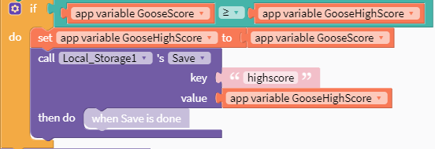
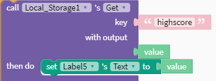

The overall purpose of the program is to simulate a game in which the player taps objects on the screen to see how many he can click in the set amount of time allowed. The player’s goal is to obtain a highscore of how many objects he has clicked in the time allotted.
The program’s functionality is that it is capable of effectively running a fully intact game. When the app launches, a title screen with a play button and about button is present. The about page provides the user’s high score, as well as information on how to play the game. When starting a game, it is evident that it works as intended, as tapping the objects on the screen raises the score, and the timer counts efficiently until zero, when the game is ended and the high score is displayed. Finally, a second game is tested where the score isn’t the user’s highest score, and it is demonstrated how the user’s highest score obtained stays put. The input is the user clicking on the screen during the game. The output is the object that they clicked on’s disappearance, and the score raising to signify the object has been counted towards the score, as is evident many times in the video.
 The name of the list is Local_Storage1. The data contained in the list represents the user’s high score throughout the games that they have played so far.
The list retains information about the user’s high score that would otherwise be wiped every time the game was restarted. By saving this overall high score to a local storage value, it ensures that it will stay in place after restarting the game. The code would not work without this local storage, as the user’s true high score would not be saved, instead being wiped every time the game restarts along with the rest of the variables.